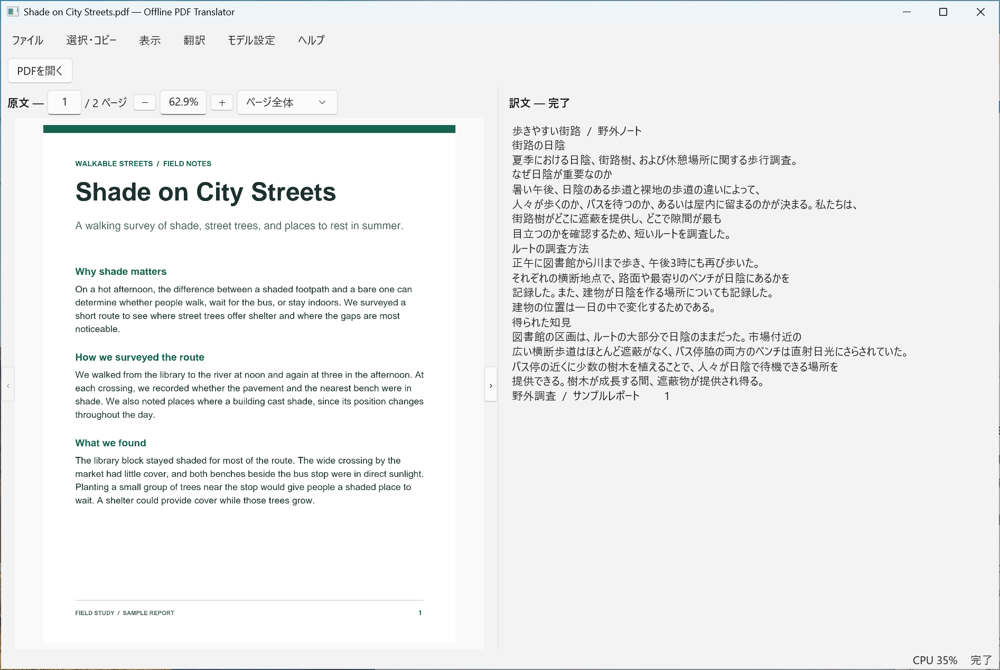

翻訳の対象範囲
現在開いている1ページのみを対象に、翻訳処理を行います。ページを切り替えるたびにその面だけを逐次処理するため、数百ページに及ぶ大容量のファイルを開いても動作が重くなりません（トレードオフとして文書全体の文脈を把握した翻訳にはなりませんが軽さを優先しました）。

基本設計
日常の事務作業における実用性と安全性を両立させるため、以下の設計を採用しています。
現在開いている1ページのみを対象に、翻訳処理を行います。ページを切り替えるたびにその面だけを逐次処理するため、数百ページに及ぶ大容量のファイルを開いても動作が重くなりません（トレードオフとして文書全体の文脈を把握した翻訳にはなりませんが軽さを優先しました）。
外部ネットワークとの通信は一切行いません。翻訳処理から画面描画までを端末内部で完結させ、作業ログや翻訳キャッシュもディスク上へ一切残さない構造です。そのため、取り扱い注意のファイルも読み込めます。※なお、本アプリは完全な機密保護性能を保証するものではありません。
翻訳モデルには、軽量な小型モデル（PLaMo 3 Translate 0.8B）を採用しました。専用GPUを搭載していない一般的な事務用ノートPCでも、CPUのみの演算によって実用的な速度で訳文を出力します。
入手方法
ご利用のOSに応じた圧縮ファイルをGitHub Releasesから取得してください。
対応OS：Windows 10 / 11（x64）・macOS 14以降（Apple Silicon）
Assets欄から windows-x64-release.zip（Windows）または macos-arm64-release.zip（macOS）を選択してください。macOSで初めて起動するときの許可手順はマニュアルに記載しています。
翻訳モデルのライセンス条件については、同梱の規約書（PLaMoコミュニティライセンス）およびライセンス説明欄をご確認ください。
操作手引き
画面の拡大縮小、文字サイズの変更、ショートカットキーの一覧を掲載しています。